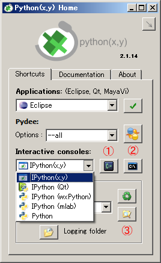
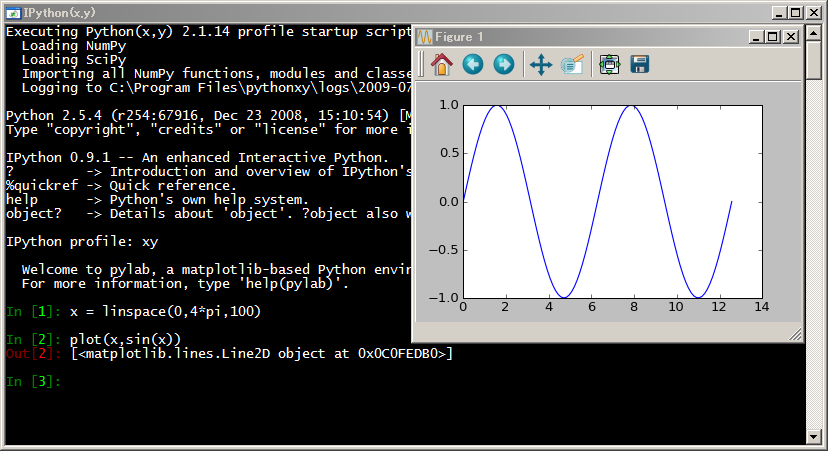
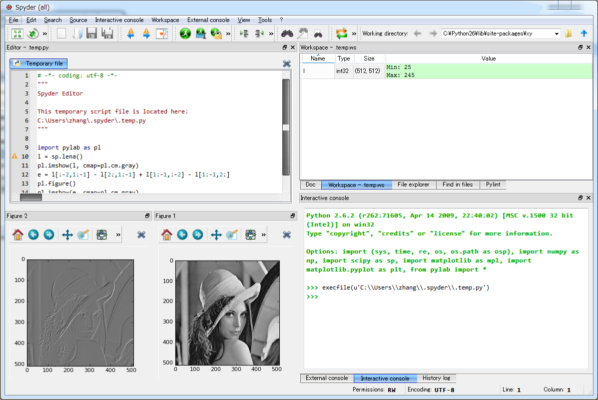
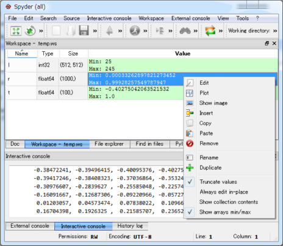
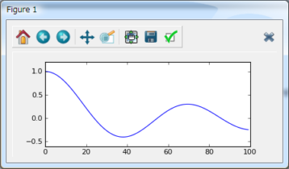
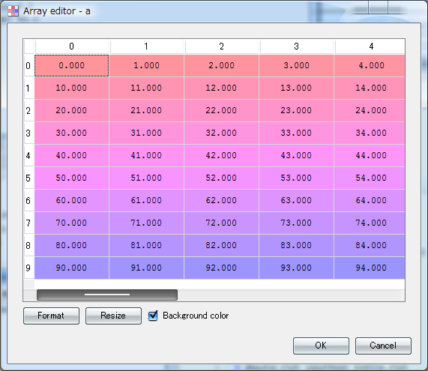

软件包的安装和介绍
安装软件包
安装
和Matlab不同，Python的科学软件包由众多的社区维护和发布，因此要一一将其收集齐安装到你的电脑里是一件很费时间的事情。幸好这些工作已经有人帮我们整理好了。只需要下载一个文件，一次安装就能拥有众多的函数库可供使用。
这里介绍两个科学计算Python合集的下载和安装过程。
Python(x,y)
http://www.pythonxy.com 发布的Python(x,y)将近400M，收集了众多的函数库以及文档、教程。并且提供了一个方便的启动界面：

Python(x,y)的启动画面
- Shortcuts：启动各种应用程序
- Documentation：打开各个软件包的文档
- About：查看所安装的程序库的版本信息
Enthought Python Distribution (EPD)
下载地址：http://www.enthought.com/products/getepd.php EPD是一个商业的Python发行版本，同样包括了众多的科学软件包，而且作为教学使用是免费的，大小约为250M。
工具
安装好了之后先看看下面这些常用的工具，在以后的学习过程中会经常用到。
iPython
ipython 是一个 python 的交互式 shell，比默认的 python shell 好用得多，支持变量自动补全，自动缩近，支持 bash shell 命令，内置了许多很有用的功能和函数。
如果你安装了Python(x,y)的话，可以从Python(x,y)的启动界面中运行iPython。

通过Python(x,y) Home启动IPython的各种选项
从下拉选择框中选择你想运行的iPython，然后点击后面的①或者②按钮启动iPython。下拉选择框中的IPython(x,y)、IPython(Qt)、IPython(wxPython)和IPython(mlab)等几个选项都是启动iPython，只不过它们的启动方式不同。而Python选项则只启动单纯的Python Shell。
| 选项 | 参数 | 含义 |
|---|---|---|
| IPython(x,y) | -pylab -p xy | |
| IPython(Qt) | -q4thread | |
| IPython(wxPython) | -wthread | |
| IPython(mlab) | -wthread |
点击①按钮将用一个叫做Console的软件启动Shell，此软件在窗口中显示Shell，并且支持多标签。点击②按钮用Windows自带的Cmd启动Shell。
如果你用python(x,y)的启动界面通过IPython(x,y)运行iPython的话，那么在iPython打开之后自动运行一个default.py脚本。此脚本缺省执行以下的函数库导入:
import numpy
import scipy
from numpy import *
为了和numpy, scipy等社区的推荐的标准导入方式一致，请点击按钮③，然后在打开的文件夹中添加一个名为numpy.py的文件，编辑此文件，添加以下几行推荐的导入:
import numpy as np
import scipy as sp
import pylab as pl
此后运行IPython(x,y)的时候请记着要选择numpy.py为启动脚本。
如果要使用pylab，TraitsUI等在shell中和图形界面进行交互的话，需要选择带-wthread参数的选项(-pylab也可以)。下图是一个用pylab绘制sin波形图的例子：

使用IPython交互式地绘制正弦波
在iPython的交互中可以方便地使用如下功能：
- 自动补全：输入一部分文字之后按tab键，iPython将列出所有以输入补全信息。
- 查看文档：输入需要查看文档的函数，然后在后面添加?或者??，?表示查看函数的文档，??表示查看其Python源代码，如果函数不是Python写的，则查看不到。
- 执行cmd命令：ls-列出当前目录下的所有文件，cd-显示或者更改当前路径
- 执行Python程序：用run *.py命令，在IPython中运行指定的py文件。如果加-i参数的话，则在IPython的命名空间中执行。也就是说在文件中没有定义名称会直接使用在IPython中的。
- 执行剪切板中的程序：你可以从本书中复制代码，然后在IPython命令窗口中执行paste命令运行复制的代码。如果执行paste foo的话，将把剪切板中的内容复制到变量foo中。变量foo是一个IPython提供的SList列表类型，它提供了很多操作所复制的内容的方法。
- 执行系统命令：在要执行的系统名字之前添加一个!号。例如执行!test.py的话，那么将让系统运行test.py文件。和run命令不同的是，test.py完全在另外的进程中运行。
spyder
spyder是Python(x,y)的作者为它开发的一个简单的Python开发环境。和其它Python IDE相比它最大的优点就是模仿MATLAB的workspace功能，可以很方便地观察和修改数组的值。
spyder的项目地址： http://code.google.com/p/spyderlib
下图是spyder的界面截图：

在Spyder中执行图像处理的程序
下图是Workspace的截图，列出了其中的变量名以及类型和大小等信息。鼠标右键可以显示出操作指定变量的菜单：
Warning
Workspace缺省配置不显示大写字母开头的变量，可以在Workspace菜单中修改这项配置。

使用Workspace查看变量内容
选择Plot选项，将出现如下图所示的绘图窗口：

在Workspace中将数组绘制成曲线图
如果Edit选项的话，将出现如下图所示的编辑器对数组进行操作：

使用数组编辑器查看和编辑数组内容
函数库介绍
Python的科学计算方面的内容由许多库构成，在基础篇中让我们首先来了解一下编写科学计算软件时经常使用的一些库。
数值计算库
NumPy为Python提供了快速的多维数组处理的能力，而SciPy则在NumPy基础上添加了众多的科学计算所需的各种工具包，有了这两个库，Python就有几乎和Matlab一样的处理数据和计算的能力了。
NumPy和SciPy官方网址： http://www.scipy.org
NumPy为Python带来了真正的多维数组功能，并且提供了丰富的函数库处理这些数组。它将常用的数学函数都进行数组化，使得这些数学函数能够直接对数组进行操作，将本来需要在Python级别进行的循环，放到C语言的运算中，明显地提高了程序的运算速度。
SciPy的核心计算部分都是一些久经考验的Fortran数值计算库，例如：
- 线性代数使用LAPACK库
- 快速傅立叶变换使用FFTPACK库
- 常微分方程求解使用ODEPACK库
- 非线性方程组求解以及最小值求解等使用MINPACK库
符号计算库
SymPy是一套进行符号数学运算的Python函数库，虽然它目前还没有到达1.0版本，但是已经足够好用，可以帮助我们进行公式推导，进行符号求解。
SymPy官方网址： http://code.google.com/p/sympy
界面设计
制作界面一直都是一件十分复杂的工作，使用Traits库，你将再也不会在界面设计上耗费大量精力，从而能把注意力集中到如何处理数据上去。
Traits官方网址： http://code.enthought.com/projects/traits
Traits库分为Traits和TraitsUI两大部分，Traits为Python添加了类型定义的功能，使用它定义的traits属性具有初始化、校验、代理、事件等诸多功能。
TraitsUI库基于Traits库，使用MVC结构快速地定义用户界面，在最简单的情况下，你甚至不需要写一句关于界面的代码，就可以通过traits属性定义获得一个可以工作的用户界面。使用TraitsUI库编写的程序自动支持wxPython和pyQt两个经典的界面库。
绘图与可视化
Chaco和matplotlib是很优秀的2D绘图库，Chaco库和Traits库紧密相连，方便制作动态交互式的图表功能。而matplotlib库则能够快速地绘制精美的图表、以多种格式输出，并且带有简单的3D绘图的功能。
Chaco官方网址： http://code.enthought.com/projects/chaco
matplotlib官方网址： http://matplotlib.sourceforge.net
TVTK库在标准的VTK库之上用Traits库进行封装，如果要在Python下使用VTK，用TVTK是再好不过的选择。Mayavi2则在TVTK的基础上再添加了一套面向应用的方便工具，它既可以单独作为3D可视化程序使用，也可以快速地嵌入到用户的程序中去。
Mayavi2官方网址： http://code.enthought.com/projects/mayavi
VTK(Visualization Toolkit)
视觉化工具函式库（VTK， Visualization Toolkit）是一个开放源码，跨平台、支援平行处理（VTK曾用于处理大小近乎1个Petabyte的资料，其平台为美国Los Alamos国家实验室所有的具1024个处理器之大型系统）的图形应用函式库。2005年实曾被美国陆军研究实验室用于即时模拟俄罗斯制反导弹战车ZSU23-4受到平面波攻击的情形，其计算节点高达2.5兆个之多。 -- 摘自维基百科
此外，使用Visual库能够快速、方便地制作3D动画演示，使你的数据结果更有说服力。
Visual官方网址： http://vpython.org
图像处理和计算机视觉
OpenCV是由英特尔公司发起并参与开发，以BSD许可证授权发行，可以在商业和研究领域中免费使用。OpenCV可用于开发实时的图像处理、计算机视觉以及模式识别程序。OpenCV提供的Python API方便我们快速实现算法，查看结果并且和其它的库进行数据交换。